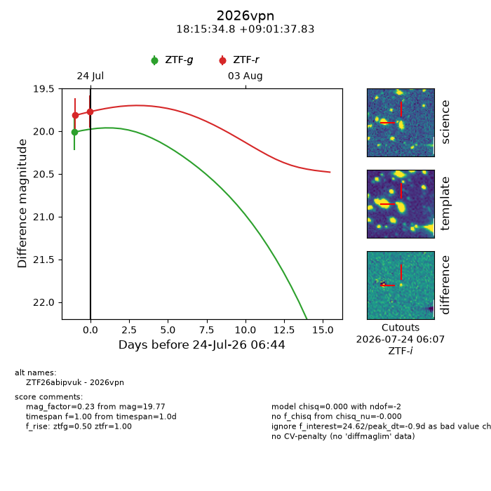
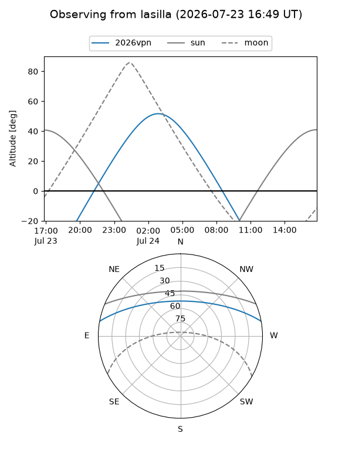
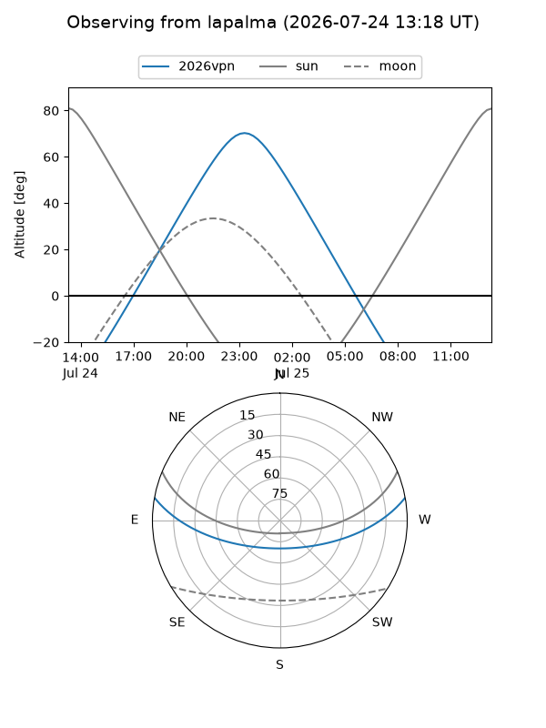
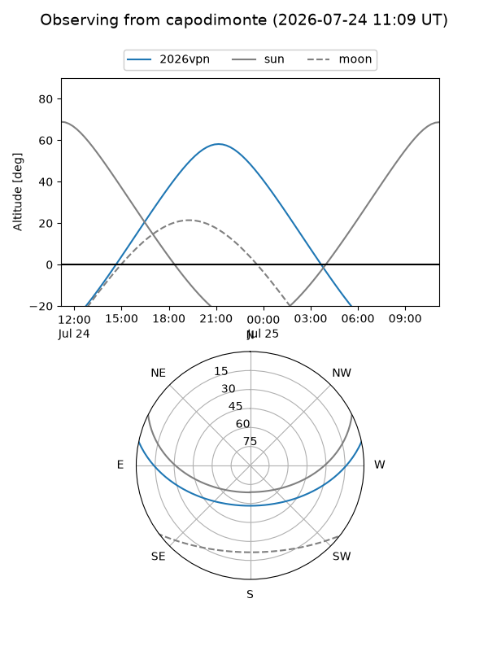
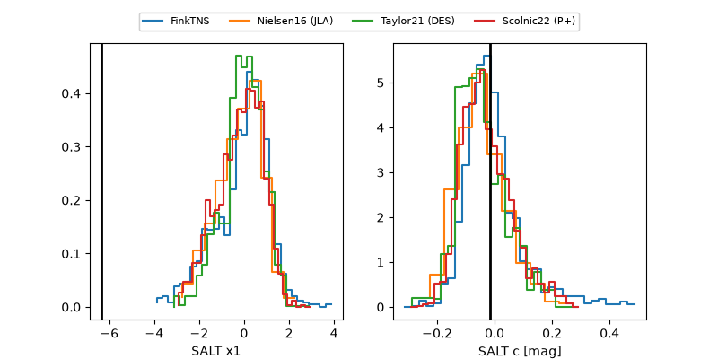

2026vpn
Target 2026vpn at 2026-07-24 06:46
Aliases and brokers:
FINK-ZTF: ztf.fink-portal.org/ZTF26abipvuk
Lasair-ZTF: lasair-ztf.lsst.ac.uk/objects/ZTF26abipvuk
ALeRCE-ZTF: alerce.online/object/ZTF26abipvuk
YSE-PZ: ziggy.ucolick.org/yse/transient_detail/2026vpn
TNS name: wis-tns.org/object/2026vpn
Direct TNS query: direct search
alt names
ZTF26abipvuk (ztf,fink_ztf)
2026vpn (tns,yse)
Coordinates:
equatorial (ra, dec) = 273.8950,+9.02717
equatorial (HMS+DMS) = 18:15:34.80,+09:01:37.83
galactic (l, b) = (37.0051,+12.03488)
Flags:
peak dt: -0.9
Photometry:
last ztfg=20.01, ztfr=19.77
1 ztfg, 2 ztfr detections
Lightcurve

Visibility



Additional plots
